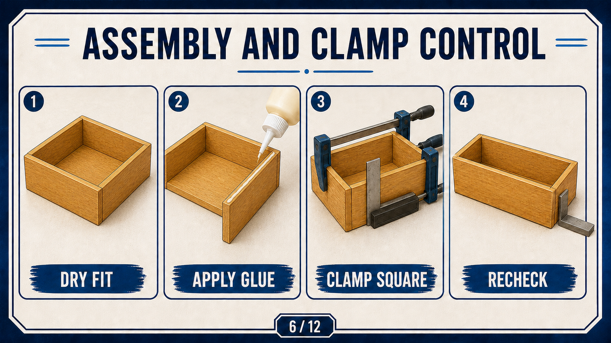
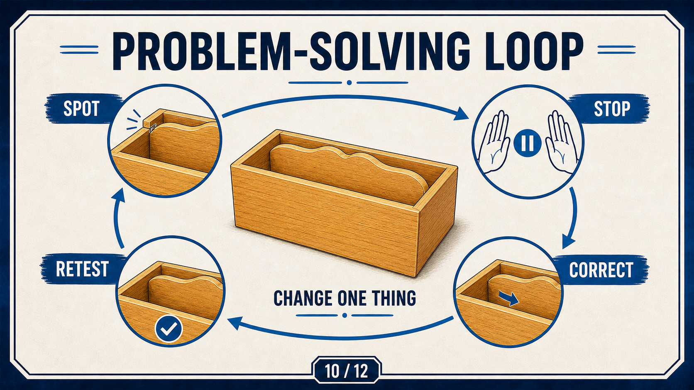

Module presentation
Learn with the slides
Use the three theory sections, guided checks and written responses to prepare and save your evidence.
Work through the module in order.
Module learning pack
Preview, learn and save evidence
Download the module presentation, then use the Small Box folio when your evidence is ready.
Student evidence
Your details
Autosave is on
Theory 1
Approved joint sequence and purpose
The confirmed pathway prepares the dovetail corner joints, the back rebate, the finger joint and the bottom rebate. These features organise how the lidded box components connect and locate.
A rebate is a recessed step or channel that allows another component to sit into the work. Dovetails and finger joints are named joint types in this project. Their exact dimensions, preparation methods and machine settings remain controlled by the approved resources, current SOPs and teacher demonstration.
- Identify the feature before selecting any process.
- Keep every mark connected to the approved source.
- Use only the demonstrated method and approved setup.
- Record the checks before moving to the next feature.
Theory 2
Dry fit, rebates and square glue-up

A dry fit checks joint contact, component alignment and squareness before glue makes the assembly difficult to reverse. A joint that does not seat consistently should never be forced.
- Check each confirmed feature against the approved source.
- Dry fit the components and inspect contact and alignment.
- Verify the box is square and record any correction.
- Begin glue-up only after the required teacher check.
During glue-up, the central quality control is keeping the box square while the approved joints are held correctly. The exact adhesive, clamping arrangement and timing remain teacher controlled.
Theory 3
Correction and evidence control

Controlled problem solving separates an observed issue from its possible cause. Change one approved factor at a time so the result can be linked to the correction.
- Stop before forcing or hiding the problem.
- Record the first evidence that shows the issue.
- Confirm the proposed correction with the teacher.
- Repeat the relevant fit, alignment and square checks.
Before-and-after notes or photographs should show the issue, the approved adjustment and the result of the recheck.
Guided practice
Weeks 3-4 knowledge checks
Use the same reflection-and-feedback loop before moving to the next task.
Apply your learning
Scaffolded written responses
Write first, then compare your response with the appropriate response example.
Focus on what you observed and what you changed. Vague claims do not earn full credit in this module.
Finish the two-week block
Save your evidence
Your work saves in this browser, but browser storage is not the official submission. Download this module PDF before changing devices or clearing browser data.
No marks, answers or personal details are sent from this webpage.